N° 82 — Boulevard de Grand Case
La mer à table, depuis Grand Case.
Restaurant français aux saveurs de la mer, directement sur la baie de Grand Case, à Saint‑Martin.
Réserver une table Découvrir la carte
- La cuisine
- Le chef Franck Vuillemin et son équipe
- Le vivier
- Langouste grillée, thermidor ou flambée
- La cave
- Des grands crus, unique à Saint-Martin
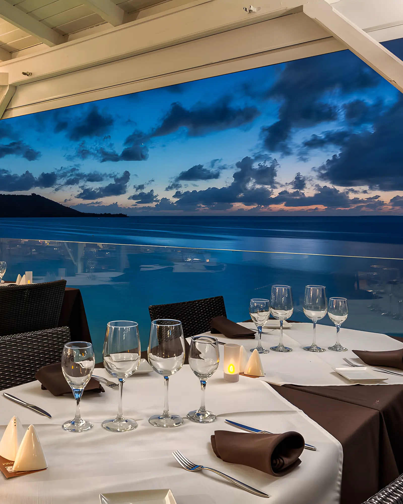

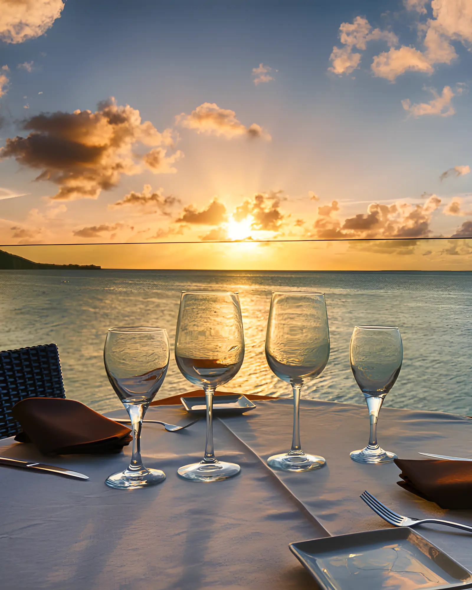
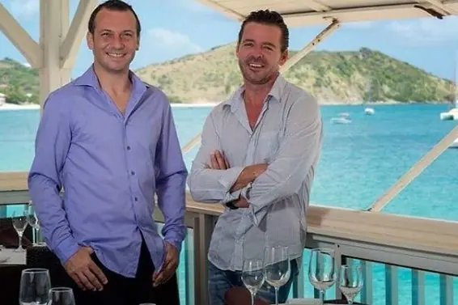
Nouveau départ
Nous sommes de retour.
Après deux longues années d’absence, suite au terrible cyclone Irma qui a frappé l’île de Saint-Martin en septembre 2017, toute l’équipe d’Ocean 82 est heureuse de vous accueillir à nouveau dans un établissement entièrement rénové.
Une nouvelle décoration, mais la même passion : partager avec vous un moment culinaire d’exception, que vous soyez en famille ou entre amis, en vacances ou résidents de l’île.
Nous espérons avoir le plaisir de vous recevoir bientôt.
Une cuisine raffinée
Cuisine française, saveurs de la mer.
Alliant simplicité et design chic, Ocean 82 est un restaurant français aux saveurs de la mer. Directement sur la baie de Grand Case, la cuisine du chef Franck Vuillemin et de son équipe va vous donner envie de revenir encore et encore.
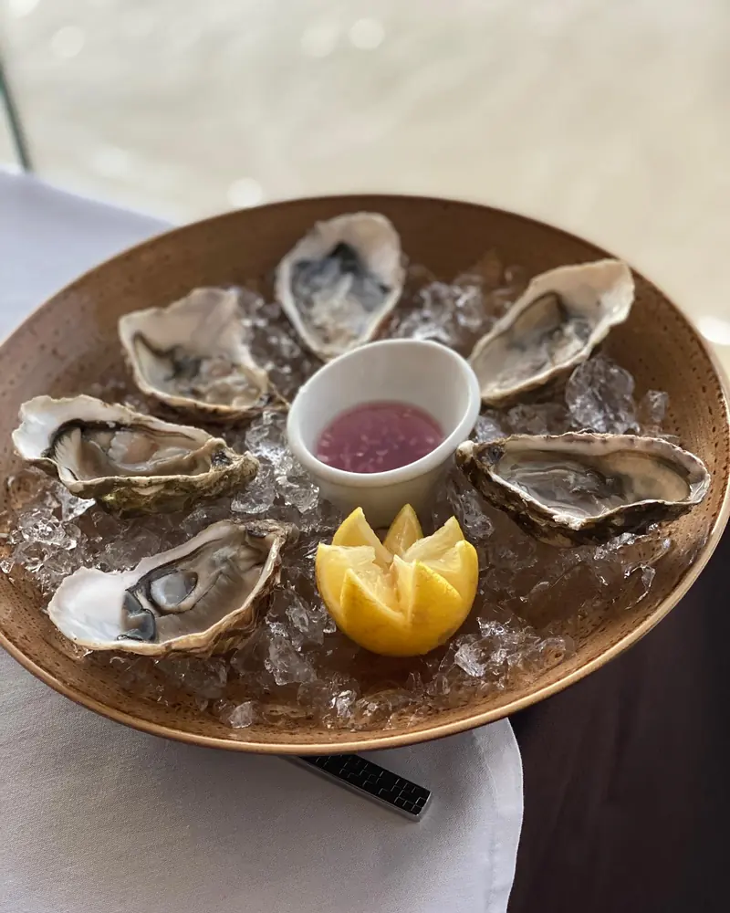

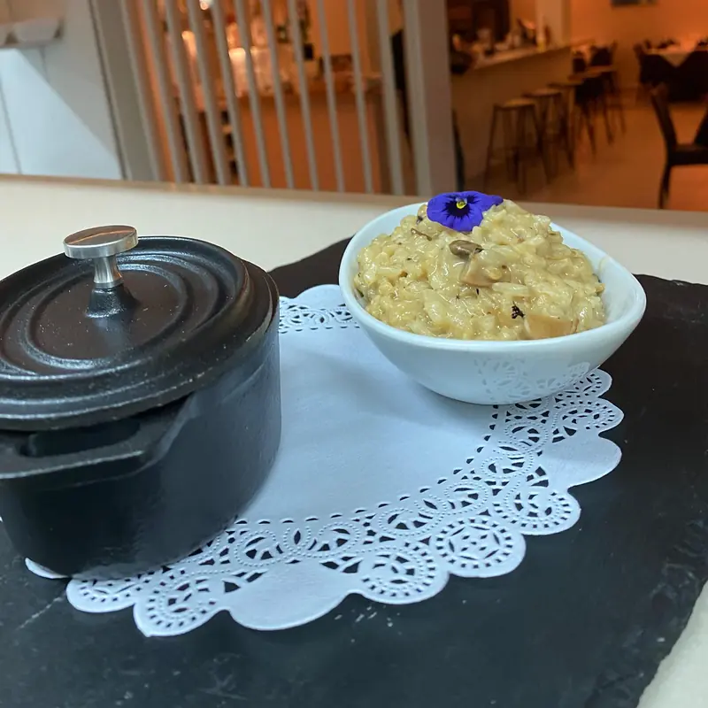

Carte 2027Touchez une rubrique pour l’ouvrir
Les hors-d’œuvre froids Cold appetizers
- Trilogie de tartare de mahi-mahi, façon péruvienne, tahitienne et créole22 €
Mahi-mahi tartare trilogy: Peruvian, Tahitian and Creole style
- La salade fraîcheur façon Ocean 8212 €
Crisp mixed salad with a light vinaigrette
- La classique salade César12 €
The classic Caesar salad
- au poulet with chicken16 €
- aux crevettes with shrimp20 €
- Les rouleaux de printemps au thon rouge et aux pommes, sauce impériale19 €
Tuna spring roll with fresh apples and imperial sauce
- Le célèbre « foie gras » maison farci aux figues confites25 €
The famous homemade duck liver pâté stuffed with fig preserve
Les hors-d’œuvre chauds Hot appetizers
- Cuisses de grenouille à la persillade19 €
Frog legs with garlic and parsley
- Raviole de langouste et champignons maison, crème de basilic et poivre de Madagascar22 €
Homemade lobster and mushroom raviole, basil and Madagascar peppercorn sauce
- Traditionnels escargots gratinés au beurre d’ail18 €
Traditional “escargots” gratinated with garlic butter
- L’œuf parfait19 €
Perfect poached egg
- Foie gras poêlé au raisin blanc, déglacé de miel et vinaigre balsamique28 €
Pan-seared foie gras with white grape, honey and balsamic sauce
Les potages Soups
- Traditionnelle gratinée à l’oignon12 €
Traditional gratinated onion soup
- Velouté de langouste14 €
Creamy lobster bisque
- La soupe de tomates glacée12 €
Traditional Spanish gazpacho
Les pâtes Pastas
- Les « penne » aux trois fromages25 €
Three-cheese penne
- Tagliatelle à la langouste35 €
Lobster fettuccine
- Tagliatelle Alfredo26 €
Fettuccine Alfredo
- Linguine alle vongole34 €
Linguine with clams
- Penne arrabbiata25 €
Penne arrabbiata
Les poissons Fish & seafood
- Langouste du vivier, préparée selon votre choix : grillée, thermidor ou flambée (+5 €)41 € / livre · 90 € / kg
Lobster from the tank: grilled, thermidor or flambéed (+€5)
- Le vivaneau (pêche locale) rôti, chutney de mangue et son beurre blanc39 €
Roasted local snapper with mango chutney and white wine butter sauce
- La marmite des Caraïbes (Saint-Jacques, langouste, vivaneau, moules) dans son bouillon de crustacés à la crème39 €
Caribbean fish pot: sea scallops, lobster, snapper and mussels in a creamy seafood broth
- Tataki de thon local, salsa de mangue acidulée et caramel de soja36 €
Local tuna tataki with citrus mango salsa and caramel soy sauce
- Saint-Jacques rôties, carpaccio de magret fumé et crème de lentilles au foie gras38 €
Roasted sea scallops, smoked duck breast carpaccio, creamy lentils and foie gras sauce
- Gambas sautées à la provençale37 €
Sautéed shrimp with garlic, parsley and zucchini
Accompagnements au choix : assortiment de légumes, gratin de pommes de terre, purée de pommes de terre, purée de patates douces, riz, pâtes et salade. Side of your choice: vegetables, potato gratin, mashed potato, mashed sweet potato, rice, pasta or salad.
Les viandes et volailles Meats & poultry
- Filet de bœuf à la plancha, sauce morilles45 €
Beef tenderloin “à la plancha” with morel mushroom sauce
- avec sa tranche de foie gras with pan-seared foie gras+10 €
- Éventail de magret de canard poêlé, sauce à la canne à sucre et réduction de vinaigre balsamique38 €
Thinly sliced roasted duck breast, sugar cane sauce and balsamic reduction
- La souris d’agneau braisée « 24 heures » au vin blanc, miel et romarin37 €
Lamb shank braised for 24 hours with white wine, honey and rosemary
- Paleron de bœuf braisé au vin rouge et sa garniture bourguignonne (poitrine de porc et champignons)37 €
Braised beef chuck with Burgundy garnish (bacon and mushroom)
- Suprême de poulet fermier farci aux tomates confites, jambon cru et comté 24 mois, rôti aux épices cajun32 €
Cajun-spiced free-range chicken breast stuffed with prosciutto, confit tomato and Comté cheese
Accompagnements au choix : assortiment de légumes, gratin de pommes de terre, purée de pommes de terre, purée de patates douces, riz, pâtes et salade. Side of your choice: vegetables, potato gratin, mashed potato, mashed sweet potato, rice, pasta or salad.
Fromages Cheeses
- L’assortiment de fromages, petite salade au balsamique, raisins frais et noix15 €
Assorted cheeses with a balsamic-dressed salad, grapes and walnuts
Les desserts Desserts
- Glaces et sorbets (la boule)4 €
Ice cream and sorbet (per scoop)
- La crème brûlée maison à la vanille12 €
Homemade vanilla crème brûlée
- La très belle profiterole16 €
The amazing profiterole
- Mi-cuit au chocolat maison et sa glace vanille14 €
Homemade molten chocolate cake with vanilla ice cream
- Le fruit du moment en trompe-l’œil Ocean 8216 €
Fruit of the day in trompe-l’œil, Ocean 82 style
- Soufflé au Grand Marnier, crème anglaise et sauce chocolat16 €
Grand Marnier soufflé with custard and chocolate sauce
La sélection des digestifs The selection of digestifs
Cognacs
- Camus VS Élégance9 €
- Camus VSOP Élégance16 €
- Camus XO Élégance25 €
- Dégustation de 3 cognacs Camus « Île de Ré » (6 cl) — Fine Island, Maturated et Cliff Cellar20 €
Armagnacs
- Janneau VSOP9 €
- Janneau 15 ans14 €
- Janneau 198018 €
Calvados
- Berneroy VSOP9 €
- Berneroy XO14 €
Rhums vieux
- Pyrat XO Reserve, HSE rhum vieux VO9 €
- Saint-Étienne XO15 €
Eaux-de-vie
- Grappa di Barolo, poire William, framboise9 €
Whisky
- J. Walker Black Label9 €
- Chivas Regal 12 ans, Glenlivet 12 ans10 €
- J. Walker Blue Label27 €
Liqueurs
- Limoncello di Capri, Get 27, Get 31, Sambuca Molinari, Amaretto, Frangelico, Manzana8 €
- Grand Marnier, Chartreuse, Baileys9 €
Tequila
- Patrón Añejo, Silver, Reposado ou XO Café10 €
- El Jimador Gold7 €
Porto
- Sandeman blanc8 €
- Sandeman Ruby8 €
Nos prix s’entendent hors TGCA (4 %). Local tax (TGCA 4%) not included.
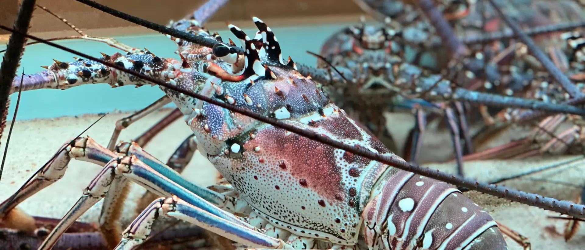
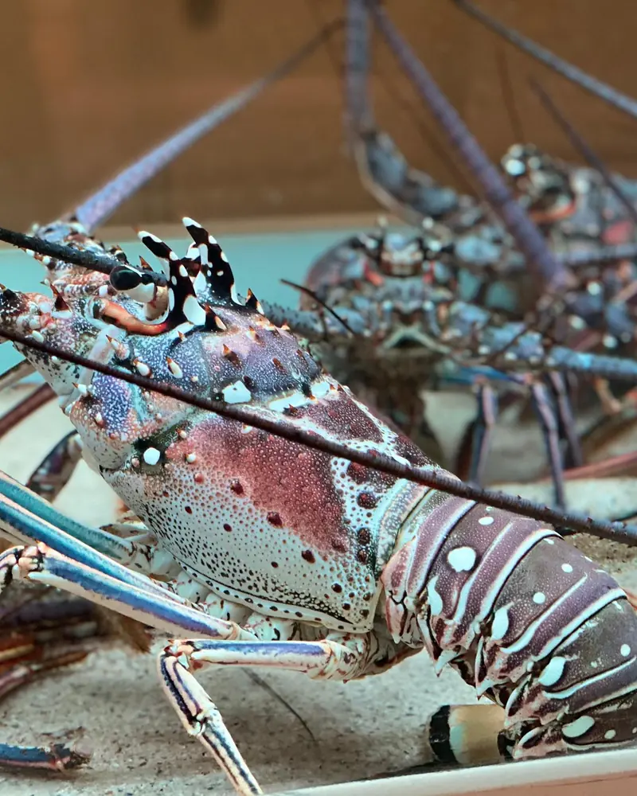
La langouste, choisie devant vous.
Langouste du vivier, préparée selon votre choix : grillée, thermidor ou flambée.
41 € / livre · 90 € / kg
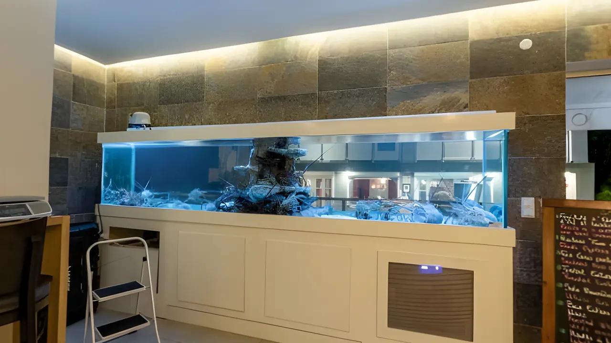
Une cave à vins exceptionnelle.
Une gamme de grands crus, unique à Saint-Martin, pour le plus grand plaisir des amateurs de vins.

Le bar — cocktails & digestifs
Cognacs Camus, armagnacs Janneau, rhums vieux, calvados… une sélection de digestifs pour prolonger la soirée.
La sélection des digestifs
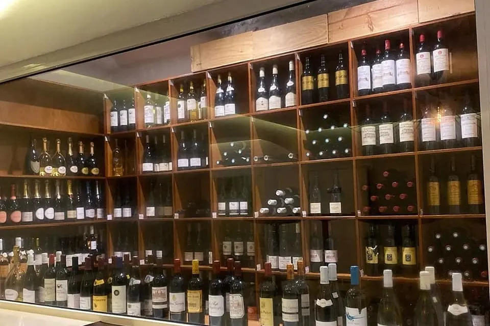
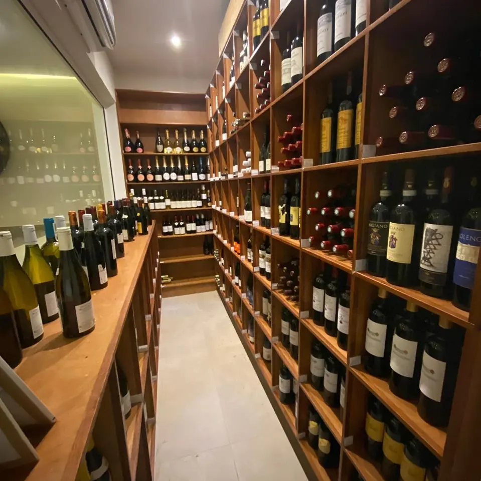
Poussez la porte, faites le tour.
Du ciel de Grand Case à la terrasse sur la baie, visitez le restaurant en 360° : glissez pour regarder autour de vous, touchez un repère pour changer de pièce.
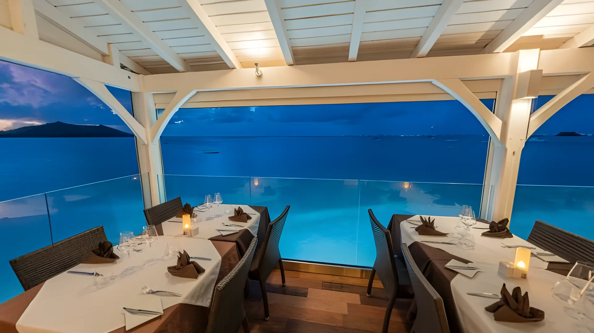
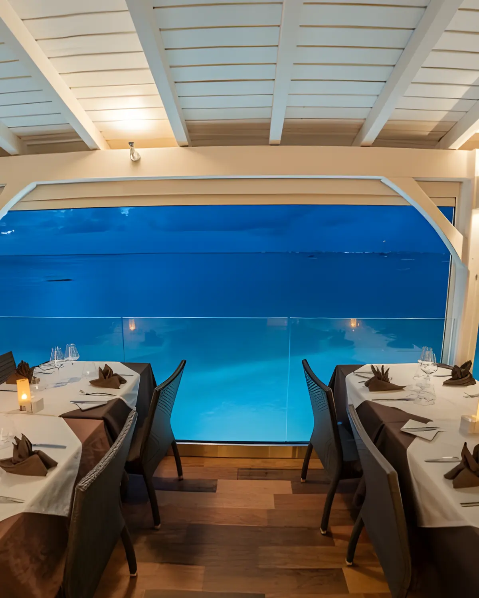
Quatre lieux · photographies 360° du restaurant
Glissez pour regarder autour de vous
Et pour finir, le trompe-l’œil.
Le fruit du moment en trompe-l’œil Ocean 8216 €
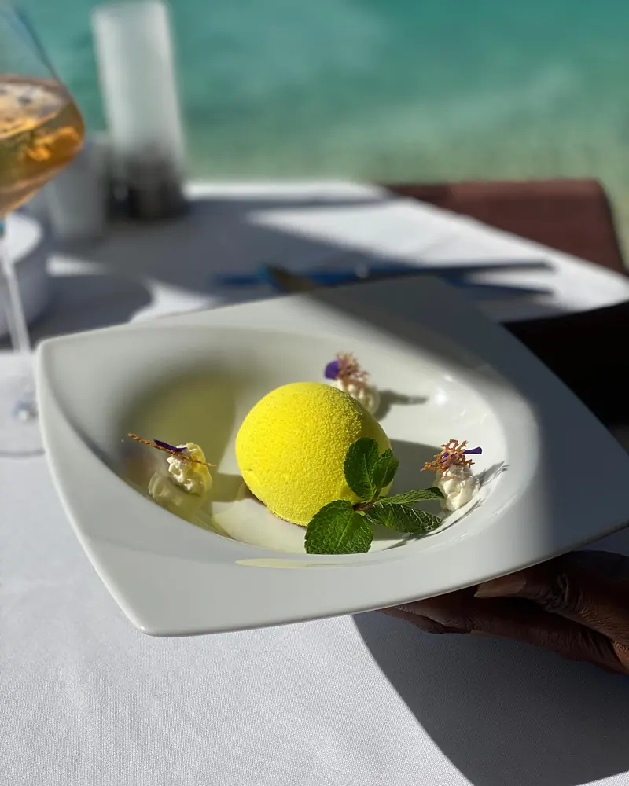
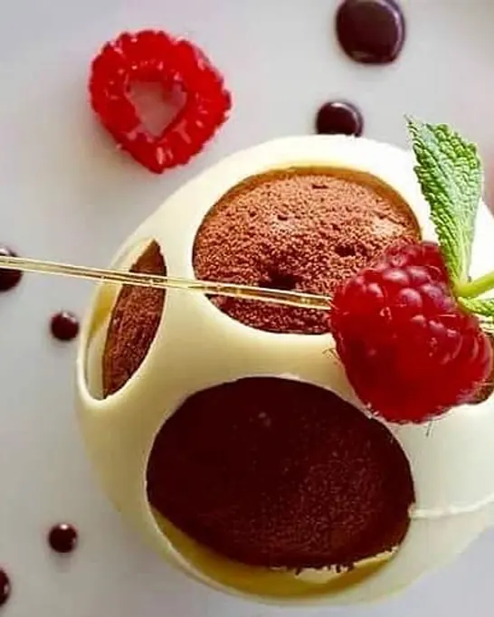
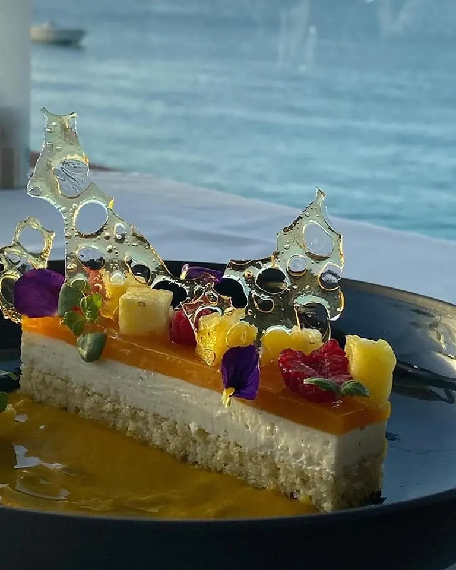
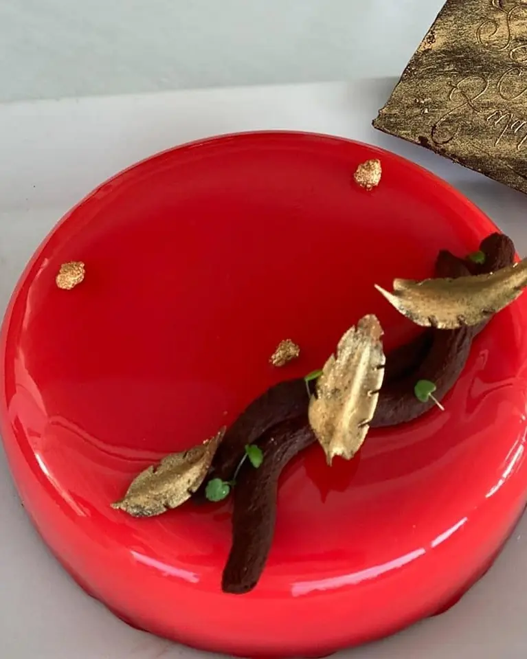
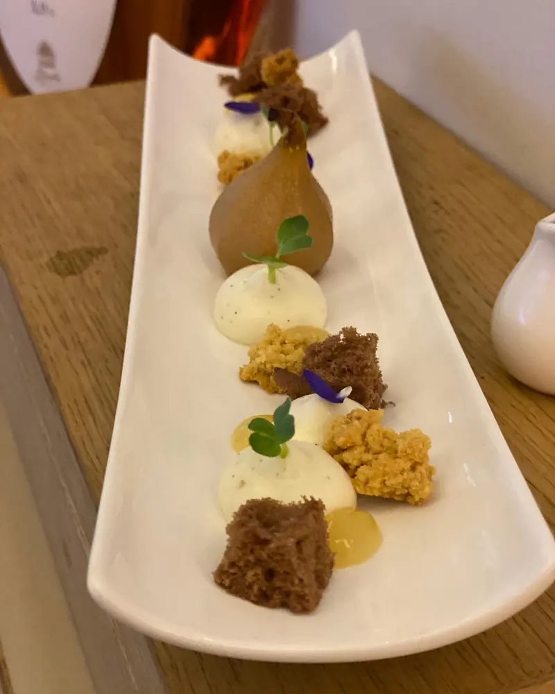
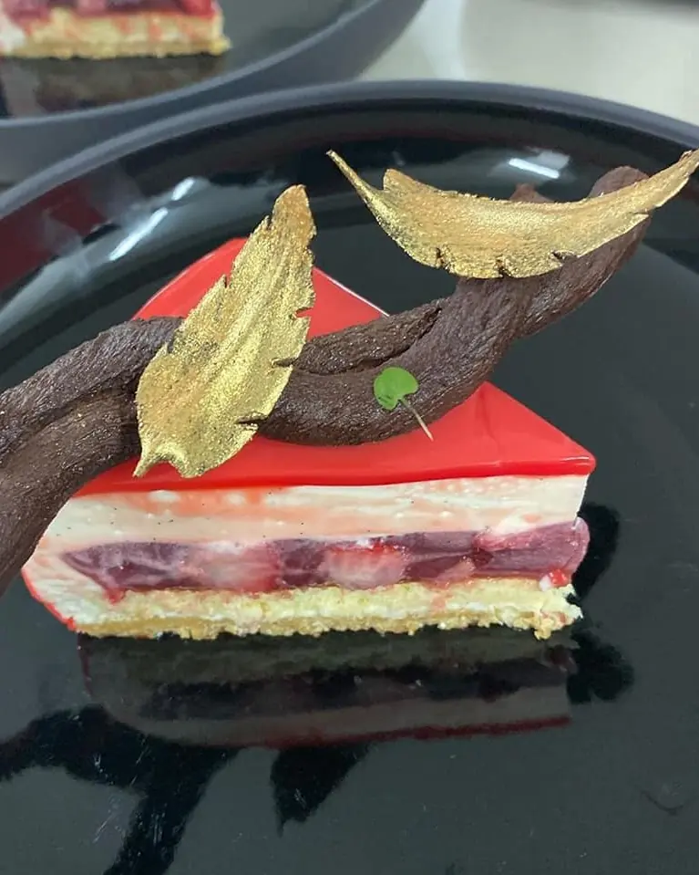
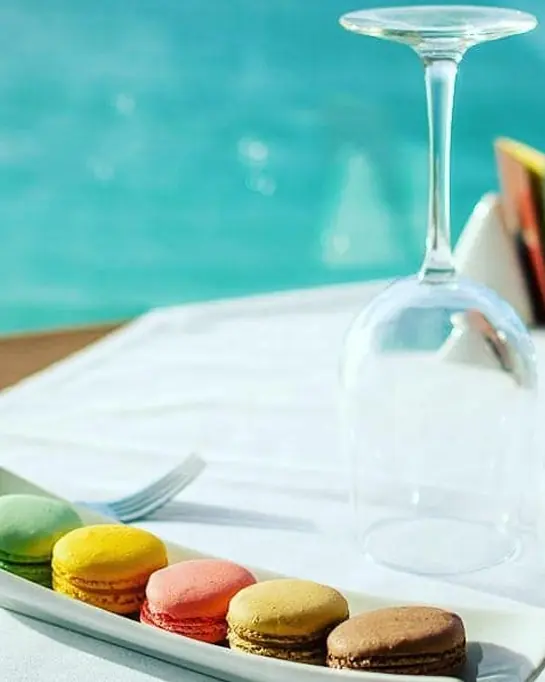
Réservez votre table.
Réserver est simple : appelez-nous entre 15h et 18h, écrivez-nous sur WhatsApp, ou utilisez le formulaire.
- Ouvert tous les jours
- Jusqu’au 30 novembre : 15h00 – 22h30
- À partir du 1er décembre : 11h30 – 22h30
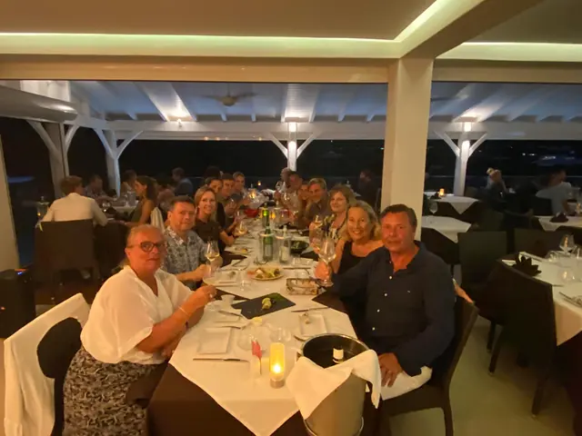
Événements privésLe restaurant est disponible pour vos événements privés : mariages, anniversaires… N’hésitez pas à nous contacter.